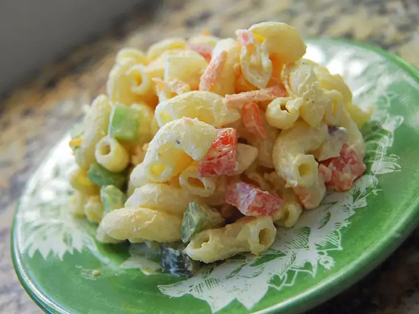

Home
Macaroni Salad With Pickles

Description
Macaroni Salad with Pickles is a creamy, tangy side dish perfect for picnics, barbecues, or everyday meals. It features tender elbow macaroni mixed with crunchy diced pickles, finely chopped red onions, and celery for extra texture. The dressing is typically made from mayonnaise, a touch of mustard, and pickle juice, creating a rich and zesty flavor that ties everything together.
This salad is easy to customize with add-ins like hard-boiled eggs, shredded cheese, or even diced ham. After mixing, it’s best chilled for at least an hour to allow the flavors to meld. The combination of creamy and crunchy elements, along with the punchy pickle tang, makes it a crowd-pleasing favorite.
Ingredients
- 1 (16 ounce) package macaroni
- 4 eggs
- 1 cup mayonnaise
- ½ cup sour cream
- 1 teaspoon salt, or to taste
- ¼ teaspoon ground black pepper, or to taste
- ¼ teaspoon ground mustard
- 2 tablespoons sweet pickle juice
- 2 tablespoons celery seed
- 1 cup chopped celery
Steps
- Cook pasta in a large pot of boiling water until al dente. Drain; rinse with cold water. Set aside.
- Meanwhile, place eggs in a saucepan, and fill with enough cold water to cover eggs completely by about 1 inch. Bring water to a boil. Cover, remove from heat, and let eggs stand in hot water for 20 minutes. Immediately remove from hot water and cool in an ice water bath. When cool enough to handle, peel and chop eggs.
- In a medium bowl, mix together mayonnaise, sour cream, dry mustard, sweet pickle juice, and celery seed. Season with salt and black pepper.
- In a large bowl, combine drained pasta, celery, onion, olives, sweet pickles, carrots, green pepper, and chopped eggs. Stir in dressing, and mix well. Refrigerate before serving.